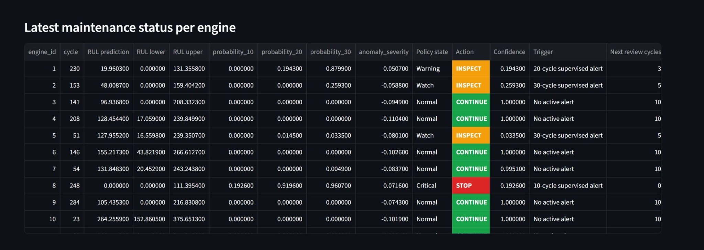
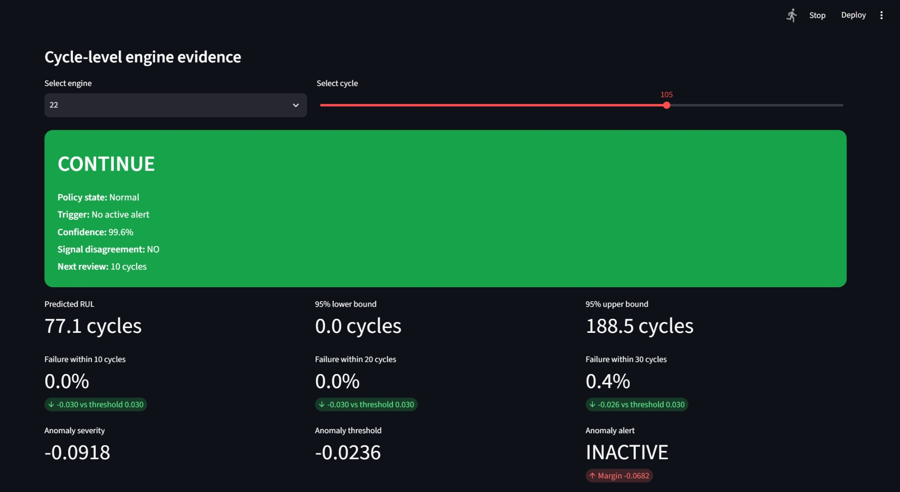
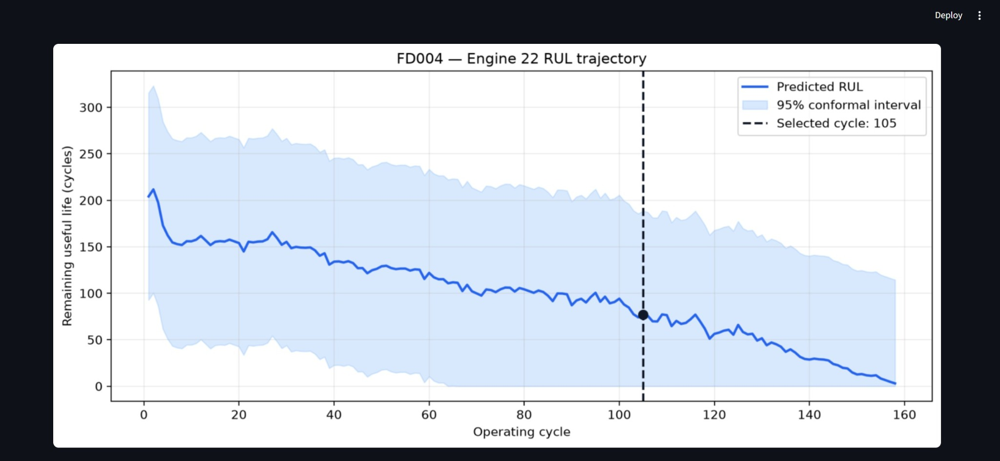
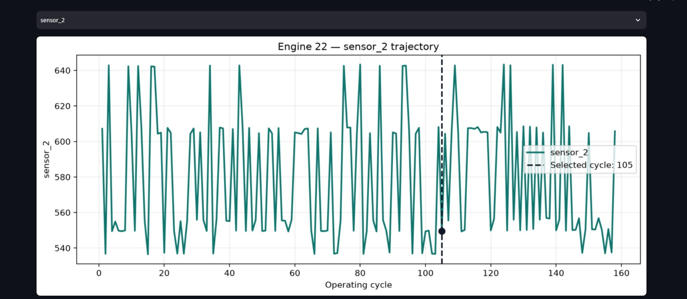
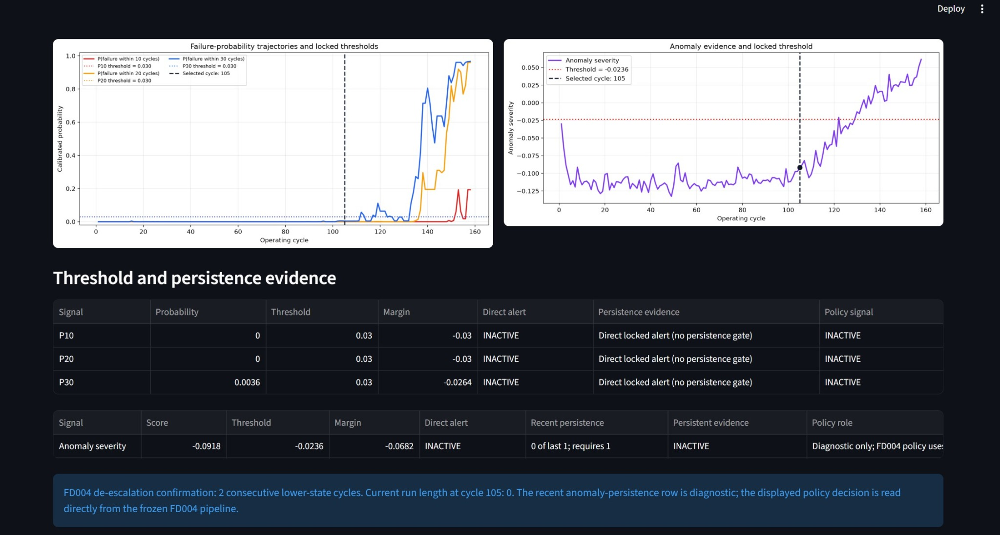
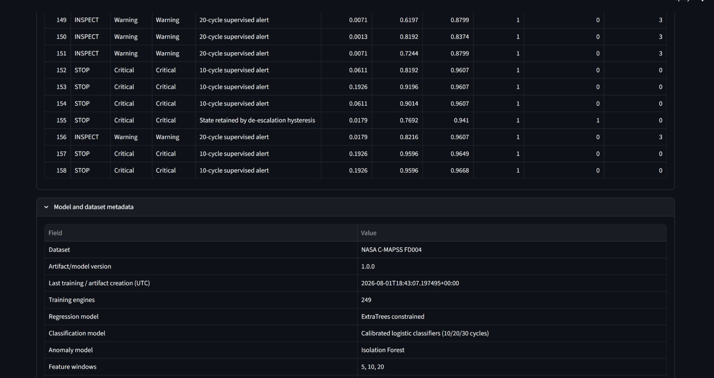

MACHINE LEARNING · PREDICTIVE MAINTENANCE
Jet Engine Hospital
An end-to-end predictive-maintenance system for NASA C-MAPSS turbofan engines.

The problem
Predict remaining useful life, identify near-term failure risk, detect anomalous behavior, quantify uncertainty, and turn those signals into an interpretable maintenance action.
Sensor DataFeature EngineeringRUL RegressionRisk ClassificationAnomaly DetectionConformal IntervalDecision PolicyDashboard
Unified dashboard






Three operating scenarios
FD001 provides the foundation, FD003 introduces multiple fault modes, and FD004 adds multiple operating conditions and multiple faults. The final interface presents a unified workflow across the three datasets.